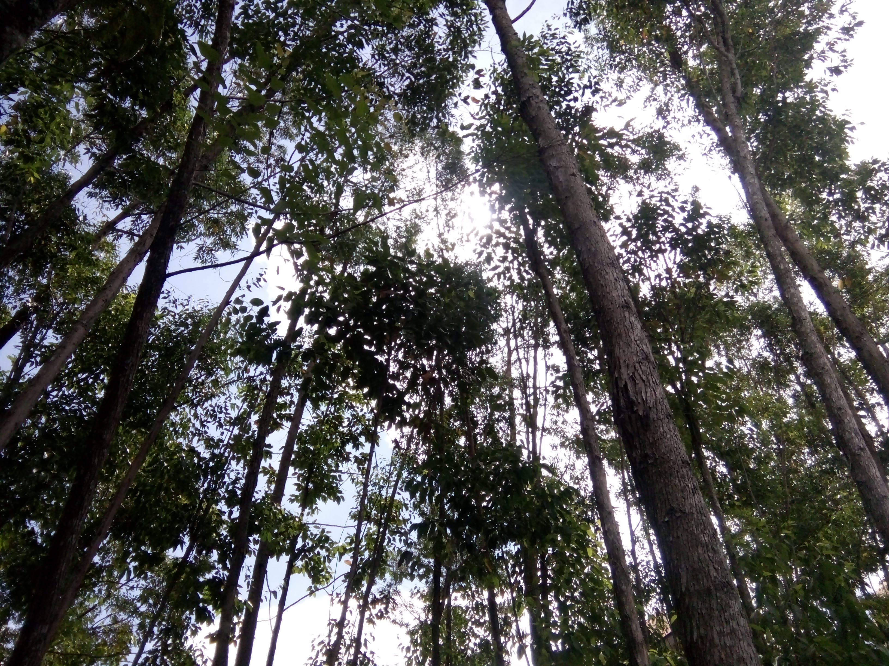

Family's
Alisa Khairunnisa

Assalamualaikum Warahmatullahi Wabarakatu...
Profile
Latar Belakang
Nama Lengkap saya Alisa Khairunnisa. Saya biasa di panggil icha sejak kecil.
Saya Lahir di Balam Sempurna, 13 Februari 2000. Saya anak pertama dari 3 bersaudara.
Asal saya dari Rokan Hilir, Riau.
Nama Papa saya Taufik Pramana dan Mama saya bernama Ely Yusniar.
Sekarang saya sedang menjalani masa studi di salah satu peguruan tinggi di Pekanbaru, Riau.
Sekarang ini saya tinggal di Jl. Air Dingin Gg.Takwa 4, Pekanbaru, Riau.
Adik pertama saya bernama Fajar Mardiansyah, sekarang dia duduk dibangku Sekolah
Menengah Pertama kelas 3 di SMP Bina Siswa.
Adik Kedua saya bernama Azza Asyifa, dan dia pun juga masih duduk dibangku sekolah Dasar
kelas 1 di SD S Harapan Bangko.